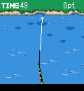

|
|
■ゲーム内容
楽しい釣りゲームです。
時間内に規定ポイント分の魚を釣ったらステージクリアです。
全部で3ステージが楽しめます。
|
|
 |
■ルアー選択
ステージが始まる前に、ルアーを選択します。
それぞれ釣りやすい魚が決まっています。
|
|
 |
■ポイントを選ぶ
左右キーで魚がいそうなポイントを探します。
ここだと思ったら、決定キーでキャスティングします。
（なおこのゲームでは、５キーでも決定キーと同じ操作となります）
ゲーム中は左上の残り時間が減っていきますのでご注意ください。 |
|
|  |
■魚を誘う
決定キーを押すと糸を巻きます。魚影の近くまでルアーを近づけてください。水面に大きな波紋が出たら、すかさず決定キーを押してください。魚がヒットします。
※高等テク
一定のリズムでルアーを動かしていると、左下に♪マークが出ることがあります。♪マークが出ている間は魚がヒットする確率が上がります。
|
|
|
■格闘について
格闘中は右側にゲージが表示されます。決定キーを押しているとゲージは上がり、離すと下がっていきます。ゲージが上がりすぎると糸が切れ、０になると魚に逃げられます。
格闘中に矢印のマークが表示された場合は、その方向と同じ方向キーを押してください。ゲージの揺れ幅を抑えます。
ちなみに格闘中はタイムは減りません。
|
|
 |
■結果表示
魚を手元まで引き寄せると釣り上げることができます。
魚のポイントとタイムボーナスが表示されます。
タイムボーナスは、残り時間に加算されます。
|
|
 |
■総合結果
残り時間が０になると終了です。
ステージ規定ポイント以上釣っていれば次のステージに進みます。
３ステージをクリアすると総合のポイントが表示されます。
|
|